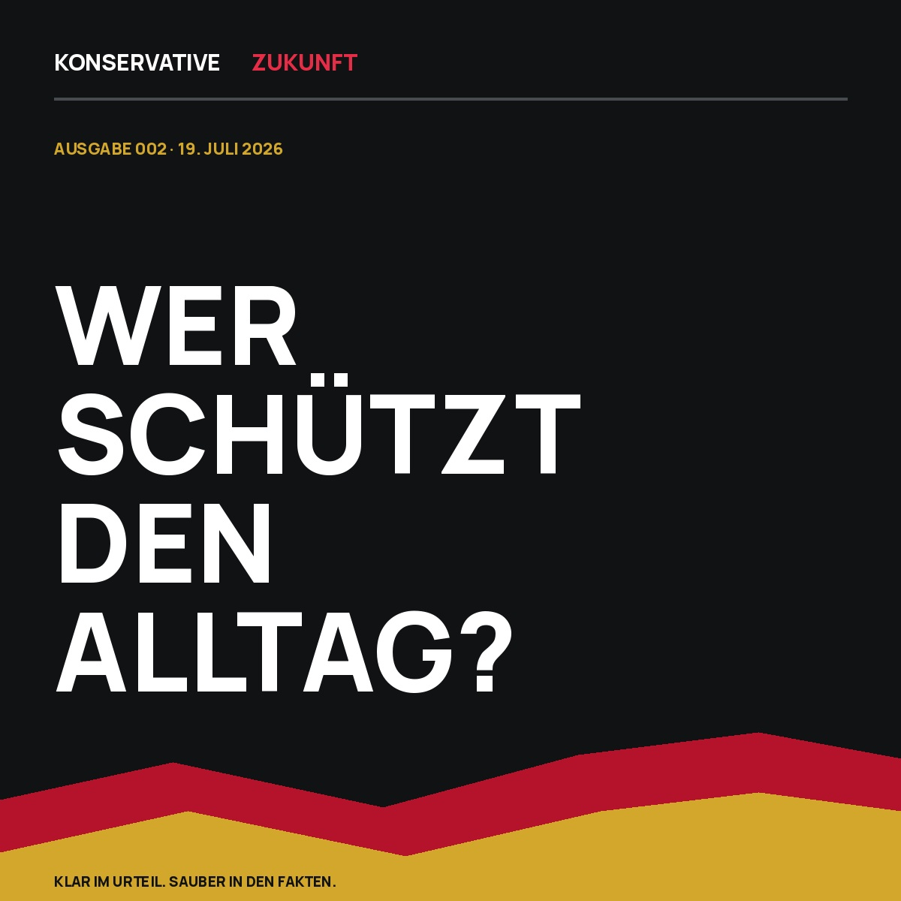

Das Titelthema
Wer schützt den Alltag?
Ein Student wird auf dem Heimweg getötet. Brandsätze legen eine Hauptstrecke lahm. Brüssel baut den digitalen Türsteher. Kontrollverlust hat Folgen – auf der Straße, auf der Schiene und im politischen Vertrauen.

In fünf Minuten
Die Woche in fünf Punkten
Was wichtig ist – und was daraus folgt.
-
01
Trier
Ein Heimweg endet tödlich
Ein 22-jähriger Student wird bei einer mutmaßlich zufälligen Begegnung erstochen. Der Tatverdächtige ist in forensischer Psychiatrie untergebracht.
-
02
Bahnsabotage
Der blinde Fleck heißt links
Brandsätze beschädigen Signalkabel zwischen Köln und Düsseldorf. Ein linksextremistisches Bekennerschreiben wird geprüft.
-
03
Europäische Union
Der digitale Türsteher
Die Altersprüfung ist technisch bereit. Eine allgemeine Ausweispflicht ist nicht beschlossen – die Infrastruktur verdient dennoch Grenzen.
-
04
Union
Rücktritt ist kein Rückzug
Jens Spahn gibt den Fraktionsvorsitz ab, behält aber sein Bundestagsmandat. Das ist rechtmäßig – und gehört zur vollständigen Bilanz.
-
05
Erfurt
Pressefreiheit gilt auch rechts
Nach dem AfD-Parteitag bearbeitet die Polizei 74 Straftaten. Rechte Reporter wurden angegriffen und beraubt; die große Mehrheit protestierte friedlich.
Ausgabe 002
Wer schützt den Alltag? 19. Juli 2026Die aktuelle Ausgabe
Kontrollverlust
hat Folgen.
Die zweite Ausgabe verbindet innere Sicherheit, linksextremistische Sabotage, digitale Freiheit und politische Glaubwürdigkeit. Ein Leitartikel, zwei Analysen, ein Kommentar und sechs belegte Kennzahlen.
Nächste Debatte
Überrepräsentation ist keine Kollektivschuld.
Die PKS 2025 weist bei Gewaltkriminalität 158 deutsche und 1.508 afghanische Tatverdächtige je 100.000 Einwohner der jeweiligen Staatsangehörigkeit aus. Wer diesen Abstand verschweigt, schützt keine Minderheit. Wer daraus individuelle Schuld ableitet, missbraucht die Statistik.
Leitartikel lesenDie LeitfrageWie gewinnt ein Staat Kontrolle zurück, ohne Freiheit und Rechtsstaatlichkeit preiszugeben?
Dauerhaft lesbar